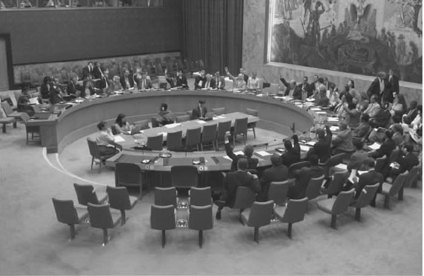
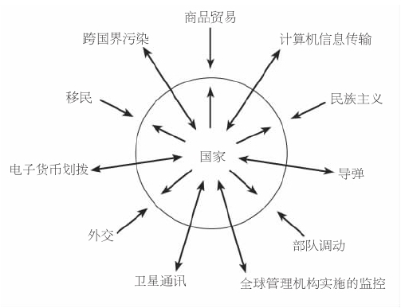
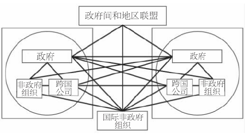

政治全球化是指全球范围内政治关系的强化和扩展。这些进程提出了一系列重要的政治问题，它们与国家主权的原则、政府间组织日益扩大的影响力以及地方与全球管理的前景相关。显然，这些主题与超越民族国家框架的政治安排的演变相对应，从而开辟了全新的概念基础。毕竟，过去几个世纪以来，人类都以领土为界来建构他们的政治差异，从而产生一种对某一特定民族国家的“归属”感。
地球的社会空间被人为地划分为“本国”和“外国”，这与人们创造一个基于共同的“我们”和陌生的“他们”之上的集体身份相对应。因此，现代民族国家制度依赖于心理根基和文化想象，它们传达了生存的安全感和历史的延续感，同时要求以民族忠诚来考验公民。在将他者形象妖魔化的影响下，人们相信自己民族的优越性，这为发动大规模战争提供了必要的精神能量——正如现代国家强大的生产能力为上世纪的“全面战争”提供了必要的物质条件一样。
全球化的当代表现部分地越过了这些古老的领土国界；在这一过程中，它同时也弱化了坚不可摧的观念和文化分界。在强调这些倾向的同时，鼓吹全球化者认为，20世纪60年代末迄今这段时期的特点是政治、统治和管理上彻底的“去领土化”。而全球化怀疑论者则认为这些说法最多不过是不成熟的表现，从最坏处说甚至是错误的，他们不但确认了民族国家作为现代社会生活的政治承载者仍然具有相关性，而且指出地区集团的出现是新形式的领土化的迹象。因为这两群人对现代民族国家命运的估量存在差异，所以他们对经济和政治因素孰轻孰重也在争论不休。
在这些争论中，出现了探讨政治全球化程度的三个基本问题：第一，跨越国界的资本、人口和技术的大量流动是否真的削弱了民族国家的权力？第二，这些流动的主要原因在于政治原因还是经济原因？第三，我们是否已经看到全球管理的出现？在详细回答这些问题之前，先让我们来简要地考虑一下现代民族国家制度的主要特征。
现代民族国家制度的起源，可以追溯到17世纪欧洲的政治发展。1648年，《威斯特伐利亚和约》结束了新教宗教改革后欧洲大国的一系列宗教战争。以最新形成的主权和领土原则为基础，随之出现的自给自足、非个人化的国家模式，挑战了中世纪拼凑起来的小政体。这些小政体的政治权力往往是地方性的，它们集中在个人手里，但仍然服从于一个较大的帝国政权。威斯特伐利亚模式的出现并没有使广袤的帝国疆域的跨国特点在一夜之间黯然失色，但它却逐渐强化了一个新的国际法观念，该观念基于所有国家都有平等的自决权这一原则之上。不管是处于法国和普鲁士专制国王的统治下，还是处于形式更加民主的英国和荷兰君主立宪制和共和国领导者的统治下，这些统一的疆域都构成了现代性世俗的基础和民主政治权力体制的基础。根据政治学家戴维·赫尔德的看法，威斯特伐利亚模式包含了以下几个要点：
《威斯特伐利亚和约》签订后的几个世纪里，政治权力进一步集中，国家管理机构进一步扩张，专业外交进一步发展，国家成功地垄断了高压政治手段；而且，国家提供了商业扩张所必需的军事手段，这反过来又促进了欧洲政治统治模式在全球的传播。
第一次世界大战末期，美国总统伍德罗·威尔逊提出了有名的基于民族自决原则的“十四点”协议，致使现代民族国家制度有了新的表现形式。他设想所有形式的民族身份都应该在领土上表现为拥有独立主权的“民族国家”，但实现这一点却非常困难；而且，由于威尔逊把民族国家神圣化为他所提出的国际体系的道德和法律的最高点，他无意间就使那些激进的种族和民族主义势力获得了某种合法性，它们把世界主要强国再次推进了一次全球规模的战争。
然而，威尔逊对民族国家的苦心孤诣与他的国际主义梦想是分不开的，他想在国际联盟这一新的国际组织的领导下，建立一个集体安全的全球体系。随着1945年联合国的成立，威尔逊意在使国际合作形成机构的想法最终得以实现。虽然联合国和其他新兴的政府间组织深深根植于以现代民族国家体制为基础的政治秩序，但它们也促进了跨越国界的政治活动不断扩展，并因此破坏了国家主权独立的原则。
随着全球化趋势在20世纪70年代日益加强，由一个个国家组成的国际社会迅速转变为政治上相互依存的全球网络，这对民族国家的主权形成了挑战。1990年，海湾战争伊始，美国总统乔治·H.W.布什成功地宣布了“新世界秩序”的产生，这实际上宣告了威斯特伐利亚模式的死亡，新秩序的领导者不再尊重跨越国界的过错行为只与当事国有关的看法。这意味着现代民族国家制度不再可行了吗？
鼓吹全球化者以肯定的方式回应了以上的问题。同时，他们中的大多数人认为，政治全球化不过是在更为根本的经济和技术力量的推动下产生的次要现象而已。他们主张，一股不可遏制和无法抗拒的技术和经济力量几乎已经使政治变得软弱无力，它会破坏政府重新引入限制性政策和规定的所有企图。这些评论者赋予经济一种不同于政治甚至超越政治的内在逻辑，他们期待着世界历史的一个新阶段，届时，政府的主要作用将不过是全球资本主义的一个超导体而已。

图8 联合国安理会在开会。安理会由15个国家组成，其中的五个国家——美国、英国、法国、俄罗斯和中国——是永久成员国。根据《联合国宪章》第25条的规定，成员国必须遵守安理会的决议。
鼓吹全球化者宣布一个“没有国界的世界”的兴起是为了让公众相信，作为理解社会政治变化的一个有意义的概念，全球化必然涉及国界的消亡。因此，这群评论者认为，政治权力存在于全球社会的构成中，体现在全球网络而不是以领土为基础的国家上。实际上他们主张，在全球经济中民族国家已经不再起主导作用了。随着领土的分界变得越来越不重要，甚至就连国家也不再那么有能力决定国内社会生活的方向了。比方说，由于与真正的全球资本市场运作相比，民族国家控制汇率或者保护本国货币的能力相形见绌，它们也就更容易受到其他地方经济政策的影响，对此，国家并不能进行实际的控制。鼓吹全球化者坚持认为，地方经济与近乎完美的全球生产交换网络的联合将决定未来最基本的政治秩序。
一些全球化怀疑论者持有不同意见，他们反而强调政治在释放全球化力量中发挥的关键作用，特别是在通过政治力量进行成功动员这一方面。他们认为，全球经济活动的快速扩展不能简单地归因于市场的自然法则和计算机技术的发展；相反，它来自20世纪八九十年代新自由主义政府撤销资本国际限制的政治决策。一旦那些决策得以执行，全球性市场和新技术就应运而生了。这一观点清楚地表明，领土仍然很重要。因此，全球化怀疑论者坚持认为，无论是以现代民族国家的形式还是以世界性城市的形式而运作，传统的政治单位仍然难脱干系。
在我看来，无论是鼓吹全球化者还是全球化怀疑论者，他们都还在类似于鸡生蛋还是蛋生鸡这种令人特别苦恼的问题上纠缠不休。无论如何，政治决策启动了相互依存的经济形式，而这些决策又是在某些特定的经济语境里制定的。如我们在前几章里所指出的，全球化的政治和经济方面是紧密联系在一起的。无疑，最近的一些经济发展，如贸易自由化和撤销对经济的管制，已经极大地限制了国家的政治选择——在南半球尤其如此。例如，资本现在已经越来越容易逃脱税收和其他国家政策的限制，这样一来，全球市场经常削弱了政府设定独立的国家政策目标以及强制执行国内标准的能力。因此，我们应该承认作为主权实体的国家的衰落以及由此引起的国家权力向地区、地方政府和各种跨国机构的转移。
另一方面，这一妥协让步未必是说，面对全球力量的运作，民族国家已经成为了无能为力的旁观者。政府仍然可以采取措施，从而使它们的经济或多或少地吸引全球投资者。另外，民族国家仍然控制着教育、基础设施以及最为重要的人口流动。确实，人们经常援引说，全球一体化这一总趋势最为显著的例外就是控制移民以及登记和监管人口。虽然世界上只有2%的人口生活在他们的出生国之外，控制移民却已经成为了大多数发达国家的核心事务。许多政府企图限制人口流动，特别是那些来自南半球穷国的人口。即使是在美国，20世纪90年代年均六十万左右的移民也只不过是20世纪头20年记录数的一半而已。
最后，作为对“9·11”恐怖袭击的回应，全世界采取了一系列重大的国家安全措施，由此反映出的政治动因与鼓吹全球化者所预言的无国界世界正好相反。一些民权运动者甚至担心，全世界爱国主义的卷土重来或许会使国家重新限制运动和集会。而与此同时，全球恐怖主义网络的活动已经暴露出了以现代民族国家制度为基础的传统国家安全结构的不足，从而迫使各国政府致力于新形式的国际合作。

全球化世界中的民族国家。
资料来源：简·阿特·肖尔特，《世界政治的全球化》，选自约翰·贝里斯和史蒂夫·史密斯编写的《世界政治的全球化》，第2版（牛津大学出版社，2001年），第22页。
那么总的来说，我们应该拒绝过早地宣布民族国家即将终结，同时也要承认民族国家已经越来越难以履行它的一些传统功能。当代全球化已削弱了国内和国外政策之间的一些传统界限，同时促进了跨国界的社会空间和机构的成长，这自然又动摇了传统的政治格局。21世纪伊始，世界正处在现代民族国家体系与后现代全球管理形式之间的一个过渡阶段。
政治全球化最显著地体现在了跨国机构和联盟的兴起之上，这些机构和联盟由共同的规范和利益连在一起。在这一全球管理的早期阶段，这些组织仿佛是一个由相互联系的力量中心（如省市政府、地区集团、国际组织，以及国内和国际的民间私营联盟）构成的网络。
在省市层次上，在各个地方当局之间，提出政策和跨国界接触的数量有了显著增长，例如，在中国的省份和美国的联邦州之间已经建立了永久性的联络团体和联络点，其中的一些能够相对独立地运作，很少受到各自国家政府的监督。为获得贷款，加拿大、印度和巴西的各省份和联邦州也开始发展它们自己的贸易日程和金融战略了。城市国际合作的一个例子是像世界大都市联盟这样的强大城市网络的兴起，它们开发合作性的投机事业，从而处理共同的跨越国界的地方性问题：像东京、伦敦、纽约和新加坡这样的“世界性城市”彼此之间联系密切，就密切程度而言，往往超过它们与各自国内许多城市的联系。
在地区层次上，多边组织和协定大量产生。全世界地区性协会与机构的涌现使得一些观察家认为，它们最终会取代民族国家成为基本的管理单位。最初，这些地区性集团是因整合地区经济而出现的，有时它们已经发展成为松散的政治联盟，拥有共同的管理机构。例如，1950年创建的欧洲共同体源于法国外交部长罗伯特·舒曼一个不起眼的计划，它旨在建立一个负责管理法国和德国煤炭和钢铁生产的跨国机构；半个世纪之后，15个成员国已经形成了一个具有政治机构的紧密的共同体，它制定共同的公共政策，设计休戚与共的安全计划。1991年前苏联解体之后，东欧的许多国家已经正式申请加入欧盟。
在全球范围内，各国政府已经组成了许多国际组织，包括联合国、北大西洋公约组织、世界贸易组织和经济合作与发展组织。这些组织完全合法的成员资格只向国家开放，它的决策权来自各国政府的代表。这些世界团体的激增表明，民族国家已经越来越难以管理不断蔓延且相互依存的社会网络了。
最后，新兴的全球管理结构也受到了“全球公民社会”的影响，这个领域主要由世界范围内成千上万自发的非政府组织组成。像大赦国际组织以及绿色和平组织这样的国际非政府组织代表着上百万普通民众，他们随时准备挑战民族国家和政府间组织的经济和政治决策。在第八章里，我们会再讨论其中一些组织的反全球主义活动。

发端时期的全球管理：相互联系的权力中心网络。
资料来源：改编自彼得·威利茨的《全球政治中的跨国因子与国际组织》，摘自贝里斯和史密斯合编的《世界政治的全球化》，第379页。
一些全球化研究者相信，政治全球化可能会促进民主的跨国社会力量的出现，它根植于蓬勃发展的全球公民社会。这些乐观的声音预言民主权利将最终摆离与泾渭分明的领土单位的狭隘关系，它们期待着出现一种民主的全球管理结构，这种结构基于西方的世界主义理想、国际法律运作以及各种政府和非政府组织间不断扩展的联系网之上。如果这样一个诱人的远景方案果真能够实现，那么世界主义民主的出现可能会是政治全球化的最终结果，它会成为在相互容忍和彼此负责的结构中多元身份活跃的基础。根据这一观点的主要阐述者之一戴维·赫尔德的看法，未来的世界主义民主包含下列政治特征：
一批并不那么乐观的评论者质疑政治全球化正在走向世界主义民主这一看法。大多数批评可以归结为：政治全球化沉湎于一种幻想的、抽象化的理想主义之中，没有考虑当前公共政策层面的政治发展。怀疑论者还认为，世界主义的提倡者没有充分仔细地考虑全球民主在文化上的可行性——换句话说，世界范围内文化、经济和政治互动的加强会引起对立和反抗，这似乎与那个彼此融合、宽容差异的温和而美好的幻想同样真实。要继续探究全球化的这一文化向度，就让我们进入下一章吧。